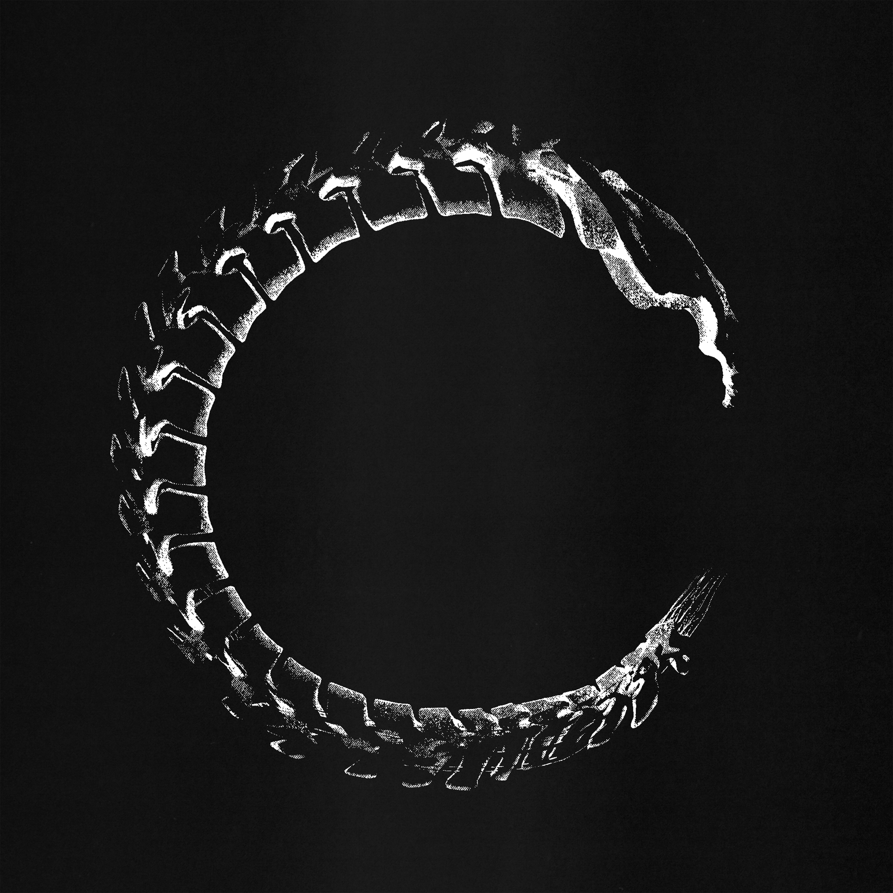
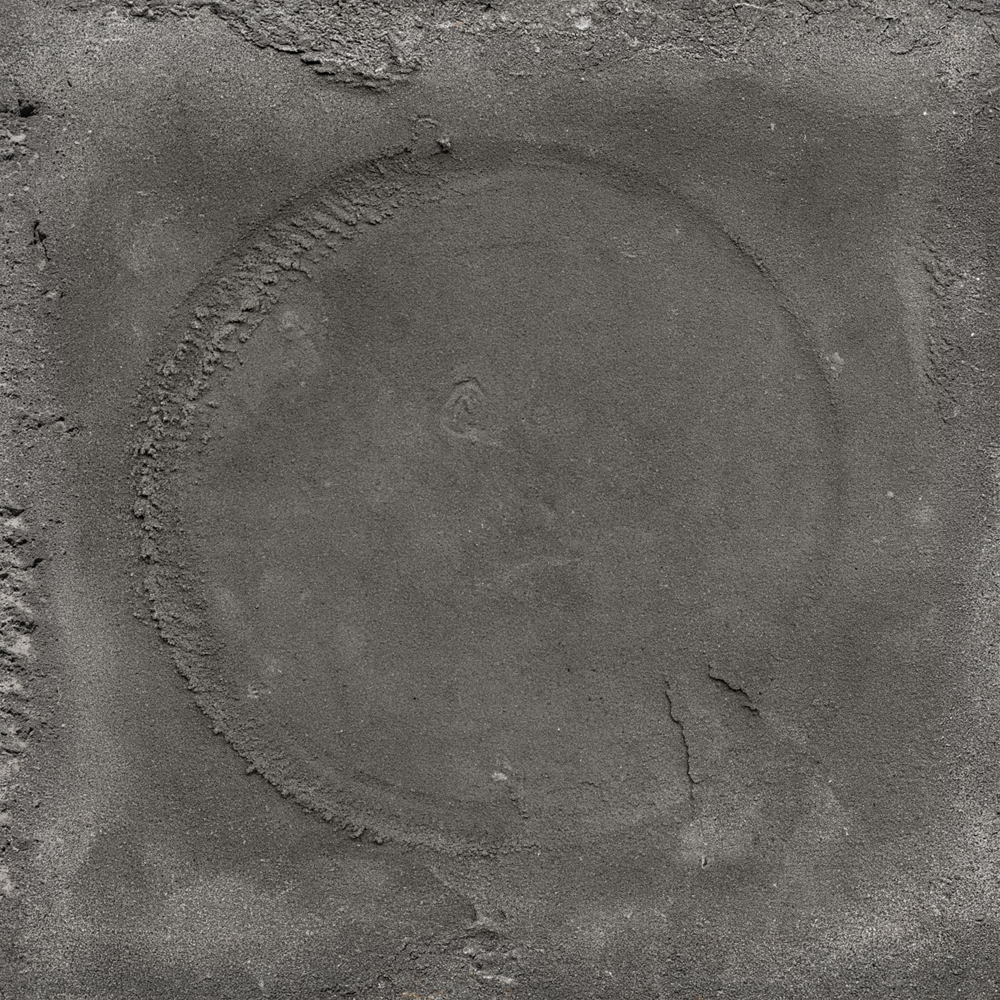
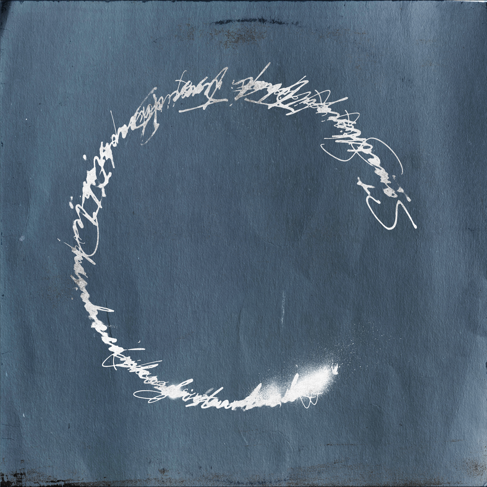
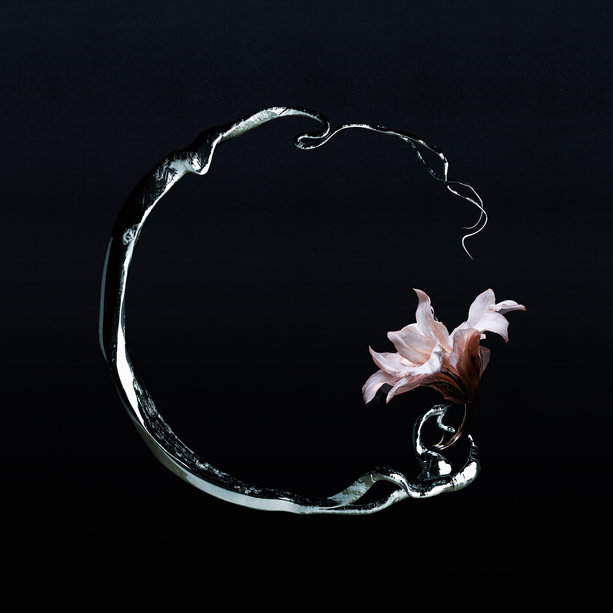

EP《DISEASE》
夢迴 BACKTODREAM
“Something that was once stable has become disturbed.”
disease 古法語為 dis-ease 失去安穩、失去原本的平衡之意。
原本完整、規律、平靜的東西，被慢慢改變。它未必立刻崩壞，也未必立即消失，而是在細微的侵蝕與變形之中，逐漸成為另一種樣子。
因此整套視覺以「不完整的圓」作為核心語言。圓象徵完整、循環與秩序，缺口則像是一種無法忽視的異常。
每一首歌都以不同材質、物件或痕跡重新構成這個圓，骨骼、砂石、符號、金屬讓同一個符號在不同狀態中反覆出現。
它們看起來仍然接近完整，卻已經不再是原來的樣子。
CREDITS
詞 Lyrics｜張承曜、張文亘、顏回
曲 Composer｜張承曜、張文亘、顏回
製作人 Producer｜黃榆翔STVN
編曲 Music Arranger｜黃榆翔STVN、Nelson卓福若
混音工程師 Mixing Engineer｜Wizzy賀冠瑋
母帶後期處理工程師 Mastering Engineer｜Wizzy賀冠瑋
母帶工作室 Mixing and Mastering Studio｜諾爾得工作室
視覺設計 Visualizer｜張名瑋



